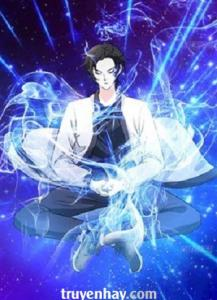
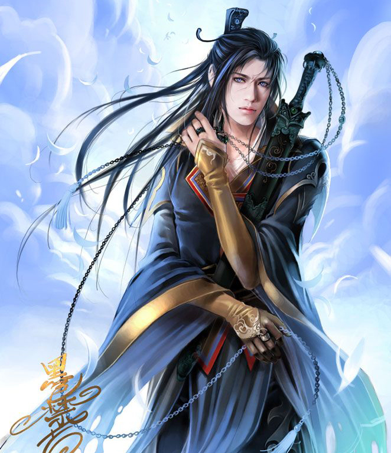
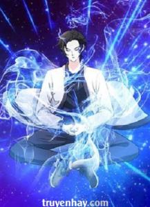
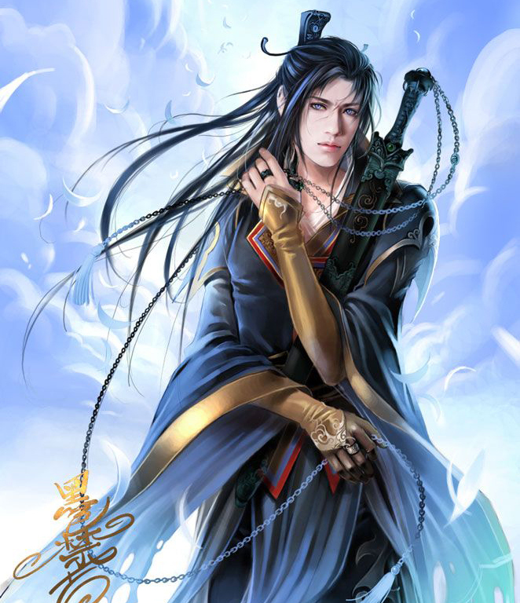

- Tác giả:Ngã Ý Như Đao
- Thể loại:Tiên Hiệp, Đô Thị, Trọng Sinh
- Nguồn:Truyện YY, Bạch Ngọc Sách
- Trạng thái:Full
Tóm Tắt
Năm đó khi Diệp Trần được 18 tuổi thì bị người khác mưu hại, đã vậy còn liên lụy dưỡng mẫu chết thả.
Cũng từ khi đó hắn dùng mười năm khổ luyện, đến cuối cùng báo thù rửa hận, giết sạch cừu nhân, nhưng cũng bị thế lực khắp nơi truy sát, cuối cùng bị vây ở trên đỉnh núi Everest.
Đại thù đã trả, hắn vốn định nhảy núi tự vận, không nghĩ tới vậy mà ngoài ý muốn xuyên qua đến Tu Chân giới.
Tám trăm năm về sau, hắn đã là đại tu sĩ Độ Kiếp kỳ, Tu Chân giới người người kính úy Cuồng Đế, nhưng lại bởi vì một trận đại chiến, trùng sinh lúc còn là thiếu niên...thay đổi những gì xảy ra kiếp trước, đối chiến tứ đại giới, tìm lại người yêu, trả thù bát đại tiên môn như thế nào? Mọi người hãy đón đọc.
Danh Sách Chương
- Chương 1
- Chương 2
- Chương 3
- Chương 4
- Chương 5
- ......